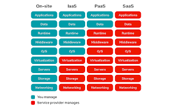
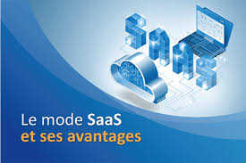
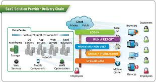
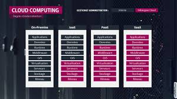

Le SaaS, ou Logiciel en tant que Service, est un modèle de distribution de logiciel à travers le Cloud. Les applications sont hébergées par le fournisseur de service. Découvrez les avantages et les inconvénients de ce modèle.
Qu’est-ce que le SaaS ?
Le Software as a Service (SaaS), ou Logiciel en tant que Service en Français, est un modèle de distribution de logiciel au sein duquel un fournisseur tiers héberge les applications et les rend disponibles pour ses clients par l’intermédiaire d’internet c'est l’une des quatre catégories principales de Cloud Computing, au même titre que l’Infrastructure en tant que service (IaaS), la Plateforme en tant que Service (PaaS), et le Desktop en tant que Service (DaaS).
Parmi les principaux fournisseurs d’un logiciel SaaS, on retrouve Salesforce, Oracle, IBM, Intuit ou encore Microsoft.
Quels sont les avantages du SaaS ?
Grâce à un logiciel SaaS, les entreprises n’ont plus besoin d’installer et de lancer des applications sur leurs propres ordinateurs ou sur leurs Data Centers. Le coût d’acquisition de matériel est ainsi éliminé, au même titre que les coûts d’approvisionnement et de maintenance, de licence de logiciel, d’installation et de support. On compte également plusieurs autres avantages.
Au lieu d’investir dans un logiciel à installer, et dans un équipement permettant de le prendre en charge, les utilisateurs souscrivent à une offre SaaS. En général, l’offre se présente sous la forme d’un abonnement mensuel dont le tarif est proportionnel à l’utilisation. Grâce à cette flexibilité, les entreprises peuvent organiser leur budget avec plus de précision et de facilité. De plus, il est possible de résilier l’abonnement à tout moment pour couper court aux dépenses.
Un autre avantage est la haute scalabilité. En fonction de ses besoins, l’utilisateur peut accéder à plus ou moins de services et à des fonctionnalités à la demande. Le Logiciel en tant que Service est donc adapté aux besoins propres à chaque business.
De même, plutôt que de devoir acheter régulièrement de nouveaux logiciels, les utilisateurs peuvent compter sur le fournisseur SaaS pour effectuer des mises à jour automatiquement et gérer l’ajout de patchs correctifs. L’entreprise a donc moins besoin d’une équipe d’informaticiens internes.
Enfin, étant donné que les applications SaaS sont délivrées via internet, les utilisateurs peuvent y accéder depuis n’importe quel appareil connecté et n’importe quelle position géographique. L’accessibilité est l’un des grands points forts de ce modèle.
Par ailleur, Par ailleurs, une application SaaS peut être utilisée par des milliers, voire des millions d’utilisateurs finaux simultanément puisqu’elle est stockée sur le Cloud.
Quels sont les inconvénients du SaaS ?
Cependant, le SaaS présente également des inconvénients potentiels. Les entreprises doivent compter sur des vendeurs externes pour fournir des logiciels, maintenir ces logiciels, proposer une facturation détaillée et garantir un environnement sécurisé pour les données de l’entreprise. En cas d’interruption du service, de changements de l’offre, de faille de sécurité ou tout problème, les conséquences pour le client peuvent être dramatiques. Pour éviter de tels désagréments, il est nécessaire pour les entreprises d’analyser soigneusement les conditions du service proposé par le fournisseur.
Comment fonctionne le SaaS ?
Le SaaS est étroitement lié aux modèles de livraison de service de logiciel ASP (application service provider) et informatique à la demande. Le modèle de gestion d’ application SaaS hébergé est similaire à l’ASP. Dans les deux cas, le fournisseur héberge le logiciel du client et le délivre aux utilisateurs finaux via internet.
Avec le modèle de Logiciel à la Demande, le fournisseur offre aux clients un accès basé sur le réseau à une simple copie d’une application spécifiquement créée par le fournisseur pour la distribution Software as a Service. Le code source de l’application est le même pour tous les clients. Quand de nouvelles fonctionnalités sont déployées, tous les clients peuvent en profiter.
En fonction du niveau de service, les données du client peuvent être stockées localement, sur le Cloud, ou les deux à la fois. Les entreprises peuvent intégrer des applications à d’autres logiciels en utilisant des API. Par exemple, une entreprise peut développer ses propres outils logiciels et utiliser l’API du fournisseur de service pour intégrer ces outils à l’offre.